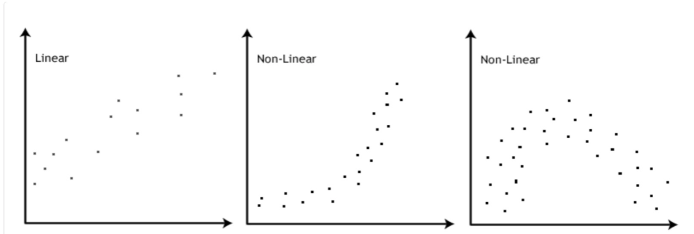
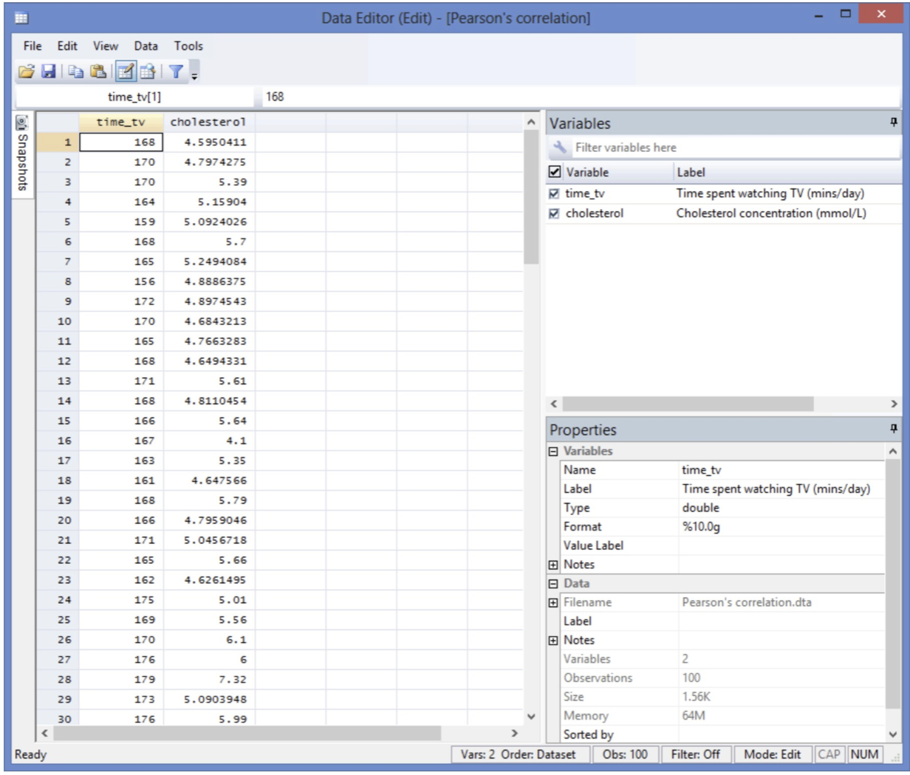
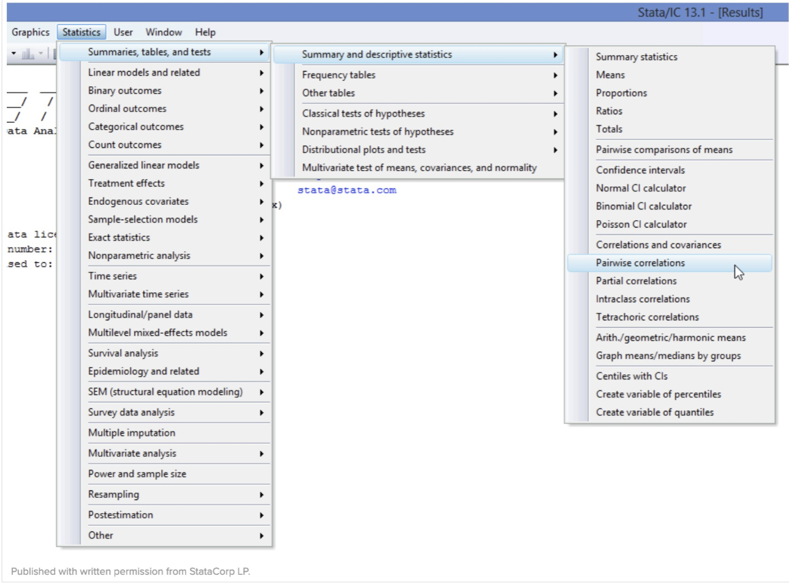
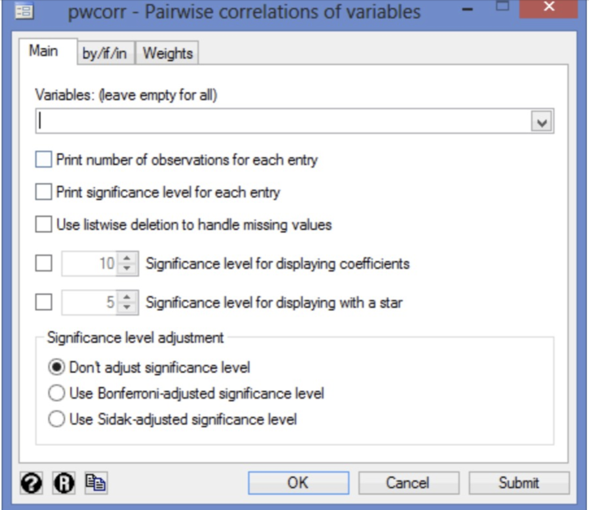
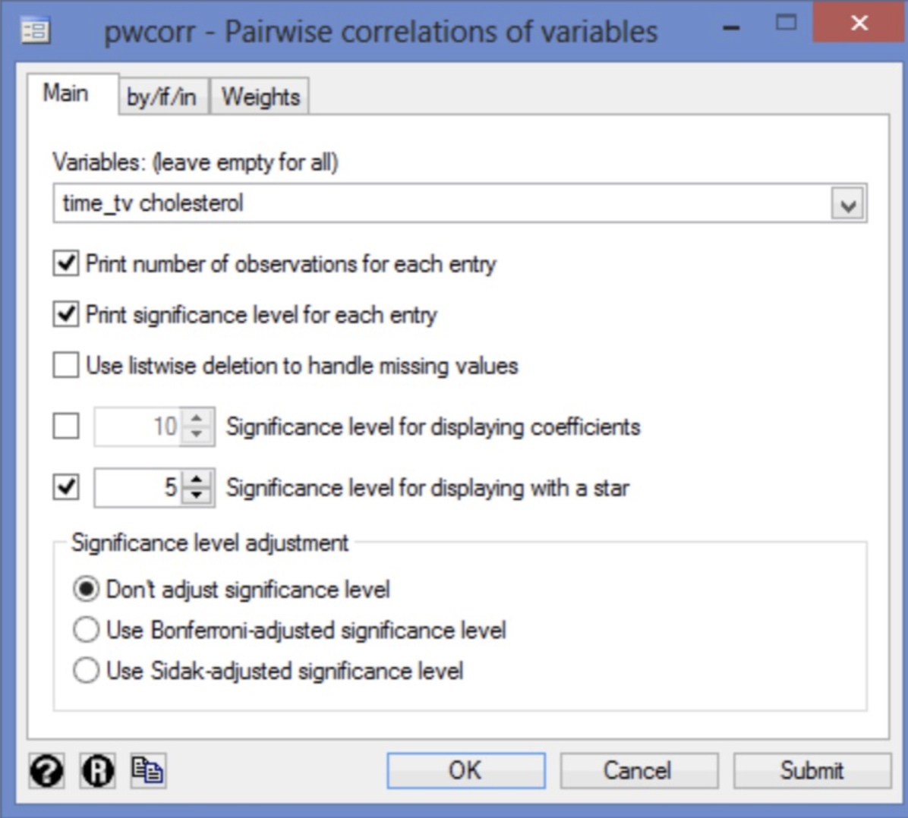
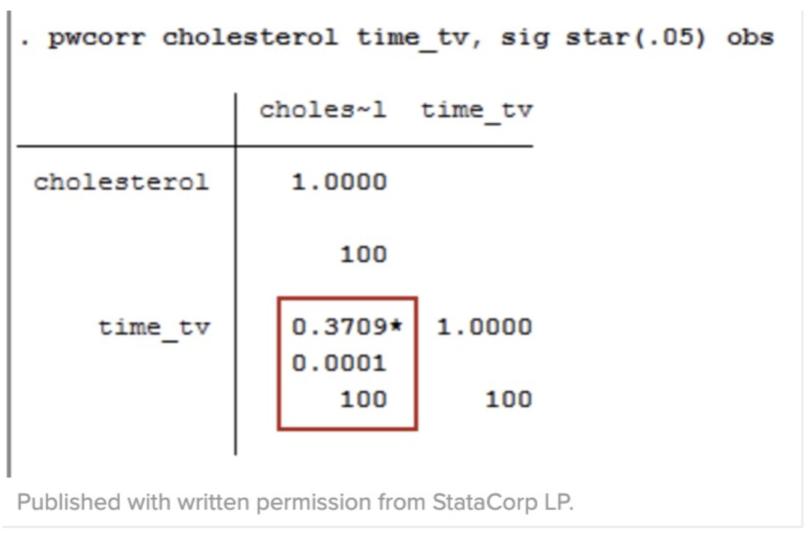

Pearson Correlation
The Pearson's correlation, also called the Pearson product-moment correlation coefficient is a measure of the degree of the relationship between two linearly related variables.
For instant with the help of Pearson Correlation you can understand whether there is an association between two stocks in the stock market. You would want to measure how the two stocks are related to each other.
This Correlation tries to draw a line of best fit through the data of two variables. The coefficient r shows how far away all these date points are from this line of best fit. For example it indicates how well the data points fit this model/line of best fit.
Assumptions
In the following you can see the assumptions you must meet in order for a Person Correlation to give your data a valid result.
- Assumption: The two variables should be continuous. Such as height, temperature, salary, revision time, intelligence (measured in using IQ score), reaction time, test, sales etc.. are measurable at the interval or ratio level. For me help you can see more Types of Variables here statistic.laerd.com
-
Assumption: For the second requirement there should a linear relationship exists between the two variables. In order to check for linearity we suggest you to create a scatterplot. There you can plot one variable against the other and then check. In the following you can see an example if how it could look like

If it happens that the relationship showed in your scatterplot is not linear, you will have to either run a non nonparametric equivalent to Pearson’s correlation or transform your data. Side note: Pearson's correlation determines whether there is a linear component of association between two continuous variables. Actually linearity is not an assumption itself but you would not want to pursue a Pearson's correlation to determine the strength and direction of a linear relationship when you already know the relationship between your two variables is not linear.
Then you would choose another statistical method. That is the reason why it is better to decide the use of the Pearson's correlation or not with the help of a scatterplot. - Assumption: There should not be significant outliers. As mentioned before the coefficient r is sensitive to outliers which can have a major impact on the line of correlation coefficient. In some cases, including outliers in your analysis can lead to misleading results. That is why there should not be any outliers or they should be only kept to a mininum.
- Assumption: The variables should be approx. normally distributed.
Example
We gonna use the example of leard.com where researchers want to find out if cholesterol
concentration also increase as people spent more time watching TV or maybe did the opposite
happen. Especially for healthy 45 and 65 years old men ( an at- risk category of people).
Cholesterol is a health problem for people with high risk of suffering from heart disease because of
fat in blood.
Therefore 100 healthy male participants has been recruited between 45 and 65 years old. The
amount of time of watching TV (e.g. the variable, time_tv) and cholesterol concentration (e.g., the
variable, cholesterol) were recorded for all participants. Now the researcher wants to correlate
cholesterol and time_tv.
Setup in Stata
In order to use stata follow the site below to download/purchase stata:
https://www.stata.com/order/download-details/
-
Create two variables: (1) time_tv = the average daily time spent watching TV in min (2) cholesterol= cholesterol concentration in mmol/L
Note: the variables mean two 'related groups' -
Enter the scores for each into the two columns of the Data Editor(Edit) spreadsheet . One
column for carb and the other for carb_protein
Test the procedure in Stata:
If in the previous section the Assumptions have not been violated. We gonna cary out the test using Stata's graphical user interface(GUI).

-
Test the procedure in Stata:
If in the previous section the Assumptions have not been violated. We gonna cary out the test using Stata's graphical user interface(GUI). -
In Stata Version 13 all you need to do is click
Statistics > Summaries, tables, and tests > Summary and descriptive statistics >
Pairwise correlations on the top menu, as shown below.

You will see pwcorr - Pairwise correlation of variables dialogue box:

Next: Select cholesterol and time_tv from wuthin the variables: (leave empty for all) box, using the tick button. Next tick the print number of observations for each entry, tick print significance level for each entry and tick significance level for displaying with a star boxes. You will end up with the following screen.

Click the OK button.
Output

The output contains three important pieces of information: (1) the sample size(2)the Pearson correlation coefficient;and (3) the level of statistical significance
(1) The sample size,n (i.e., the number of observations):You can see it in the third row of the red box. It shows the 100 participants of the study
(2) The Pearson correlation coefficient, r, shows the strength and direction of the association between cholesterol and time_tv: You can see it in the first row of the red box. As shown the Pearson correlation coefficient, r, is .3709. The sign of the Pearson correlation coefficient is positive, which means there is a positive correlation between cholesterol concentration (cholesterol) and daily time spent watching TV (time_tv)
(3) The level of statistical significance (i.e., the p-value), and if the test is statistically significant, a star (*) next to the Pearson's correlation coefficient:You can see it in the second row of the red box. You need to test the level of statistical significance if you want to test hypotheses about the linear relationship between your variables in the population your sample is from. The level of statistical significance (p-value) of the correlation coefficient in this example is .0001, which means that there is a statistically significant relationship between cholesterol concentration and daily time spent watching TV.
Interpretation
Please keep the following in mind when you report the output:
- An introduction to the analysis
- The coefficient of determination r2
- The Pearson correlation coefficient,r, and degrees of freedom, which is the sample size minus 2 (e.g., for a sample size of 100, the degrees of freedom would be98, as in the example).
- Information about your sample (including any missing values).
- The statistical significance level (i.e.,p-value) of your result.
The researcher conducted a Pearson's Correlation with a sample of 100 males aged 45 and 65 years to determine whether there was a significant relationship between cholesterol concentration and daily time spent watching TV. As the results showed there was a positiv correlatuon between daily time spent watching TV and cholesterol concentration, r(98) = .371, p < .0005 with time spent watching TV explaining 14 % of the variation in cholesterol concentration.
Sources
https://statistics.laerd.com/stata-tutorials/pearsons-correlation-using-stata.php#output
https://statistics.laerd.com/spss-tutorials/pearsons-product-moment-correlation-using-spss-statistics.php
https://www.statisticssolutions.com/correlation-pearson-kendall-spearman/
https://www.datascience.com/learn-data-science/fundamentals/introduction-to-correlation-python-data-science
https://docs.scipy.org/doc/scipy/reference/generated/scipy.stats.pearsonr.html
https://docs.scipy.org/doc/scipy-0.14.0/reference/generated/scipy.stats.pearsonr.html
https://pythonfordatascience.org/correlation-python/#scipy-correlation